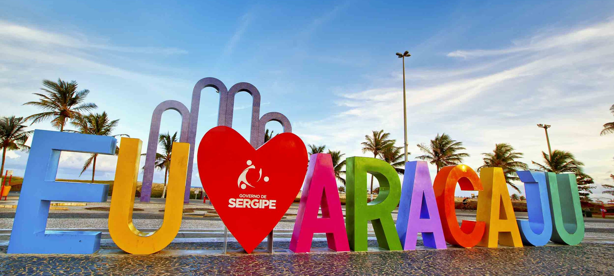

Aracaju
História
Logo após o descobrimento do Brasil em 1500, algumas áreas da nova colônia de Portugal encontravam-se em estado de guerra devido ás divergências culturais entre índios, negros escravos e os invasores de outros países da Europa. A necessidade de conquistar a faixa territorial que hoje compreende o Estado de Sergipe, e acabar com as brigas entre índios, franceses e negros, que não aceitavam o domínio português, era de extrema urgência para o trono.
O local onde hoje se encontra o município de Aracaju era a residência oficial do temível e cruel cacique Serigy, que segundo Clodomir Silva no "Álbum de Sergipe", de 1922, dominava desde as margens do rio Sergipe até as margens do rio Vaza-Barris. Em 1590, Cristóvão de Barros atacou as tribos do cacique Serigy e de seu irmão Siriri, matando-os e derrotando-os. Assim, no dia 1 de janeiro de 1590, Cristóvão Barros fundou a cidade de São Cristóvão (mais tarde capital da província) junto à foz do Rio Sergipe e define a Capitania de Sergipe.
Como cidade planejada, Aracaju nasceu em 1855, por necessidades econômicas. Uma Assembléia elevou o povoado de Santo Antônio do Aracaju à categoria de Cidade e transferiu para ele a capital da Província. A transferência deu-se por iniciativa do Presidente da Província Inácio Barbosa e do Barão do Maruim Provincial. A pequena São Cristóvão não mais oferecia condições indispensáveis para uma sede administrativa, e a pressão econômica do Vale da Cotinguiba - maior região produtora de açúcar da província - exigia a mudança. A região precisava urgentemente de um porto que escoasse melhor seus produtos.
Somente em 1865 a cidade se firmou. Era o término de uma década de lutas contra o meio físico, e contra uma série de adversidades políticas e sociais. A partir desta data ocorre um novo ciclo de desenvolvimento, que dura até os primeiros e agitados anos após a proclamação da república. Em 1884 surge a primeira fábrica de tecidos, marcando o inicio do desenvolvimento industrial. Em junho de 1886, Aracaju já possuía uma população de 1.484 habitantes, já havia a imprensa oficial, além de algumas linhas de barco para o interior.
Em 1900 inicia-se a pavimentação com pedras regulares e são executadas obras de embelezamento e saneamento. As principais capitais do país sofriam reformas para a melhoria da qualidade de vida dos habitantes. Aracaju - que já nasceu de vanguarda, acompanhava o movimento nacional e em 1908 é inaugurado o serviço de água encanada, um luxo para a época. Em 1914 é a vez dos esgotos sanitários e no mesmo ano chega a estrada de ferro.
fonte: https://www.aracaju.se.gov.br/aracaju/historia/Pontos Turísticos
Arcos da Orla de Atalaia
Os Arcos da Orla de Atalaia são um dos cartões postais mais famosos da cidade de Aracaju e do Estado de Sergipe. Símbolo maior do local, ficam na calçada da praia de mesmo nome e são um ponto turístico importante do município. O cenário é perfeito para fotografias, pois, logo à frente, há uma instalação de um letreiro com a frase 'Eu amo Aracaju'. As letras são da altura de um adulto e permitem que, com criatividade, sejam feitos ótimos cliques.
Oceanário de Aracaju
O Centro de Visitantes do Tamar, também conhecido como Oceanário de Aracaju, é uma importante ferramenta de sensibilização e educação ambiental da população. Fica localizado na Orla de Atalaia e tem formato de uma enorme tartaruga, sendo o primeiro Oceanário do nordeste e o quinto do Brasil. É um dos atrativos turísticos da capital do Estado de Sergipe.
O Oceanário de Aracaju recebe por mês cerca de 10 000 visitantes, foi inaugurado em junho de 2002 e tem capacidade para receber até 300 pessoas ao mesmo tempo, alcançando a marca de aproximadamente 120 000 visitantes por ano. Localizado a 500 metros do mar, ele reúne cerca de 70 espécies diferentes, todas nativas de Sergipe expostas em 18 aquários (cinco de água doce e 13 de água salgada).
Dados Gerais de acordo com o IBGE
| Prefeito (a) | Edvaldo Nogueira Filho |
| Vice-Prefeito (a) | Katarina Feitoza Lima Santada |
| Site do município | https://www.aracaju.se.gov.br/aracaju/historia/ |
| Área territorial | 182,163 km² |
| População estimada | 672.614 pessoas |
| Densidade demográfica | 3.140,65 hab/km² |
| IDHM | 0,770 |
| PIB per capita | R$ 26.688,23 |